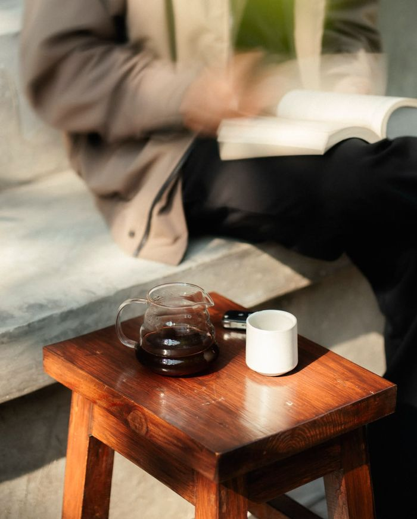
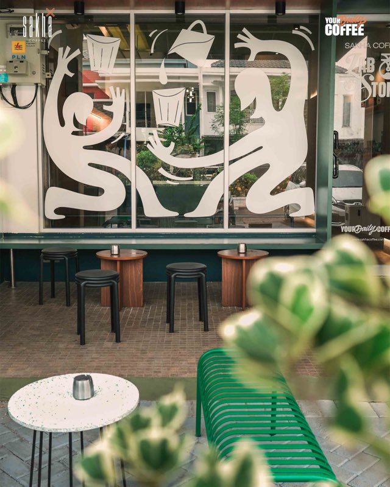
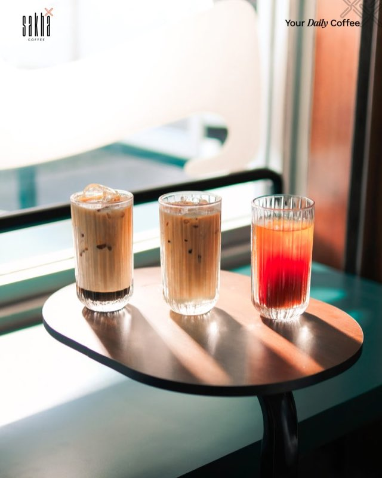
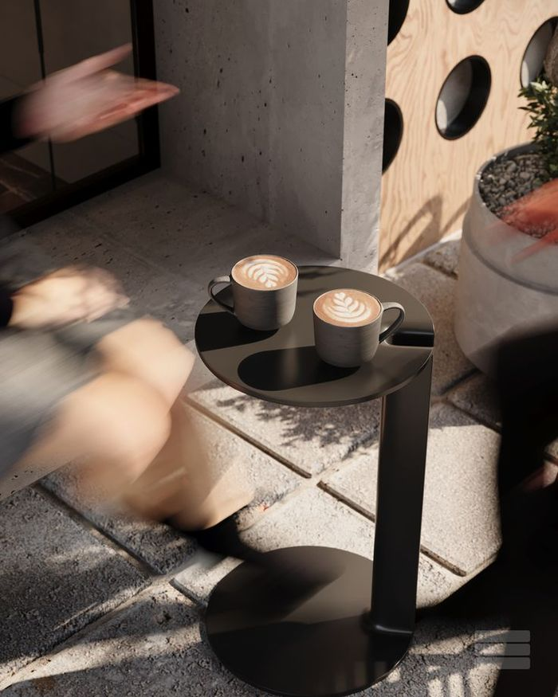
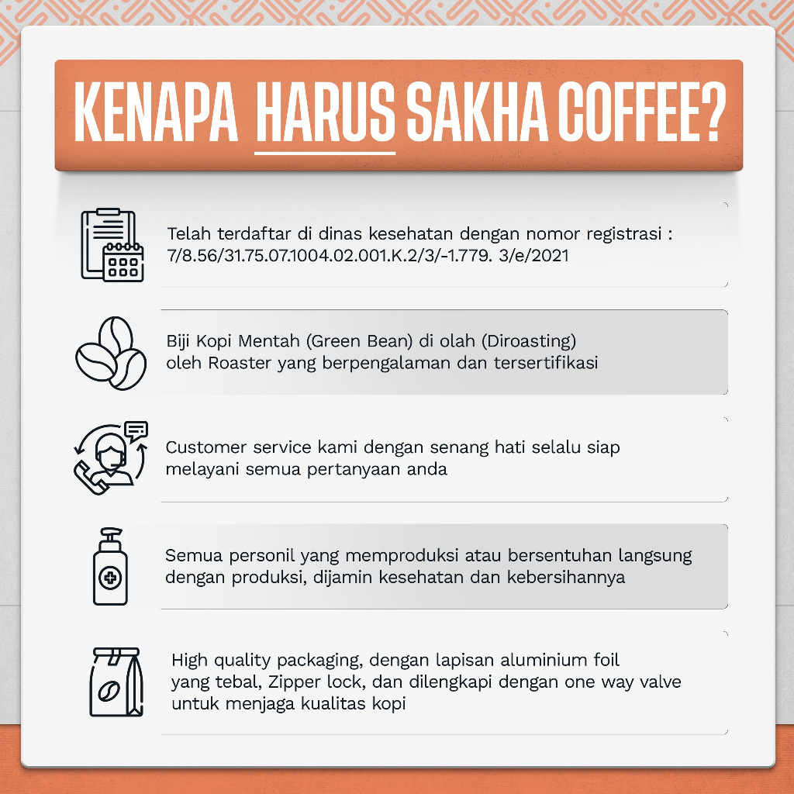
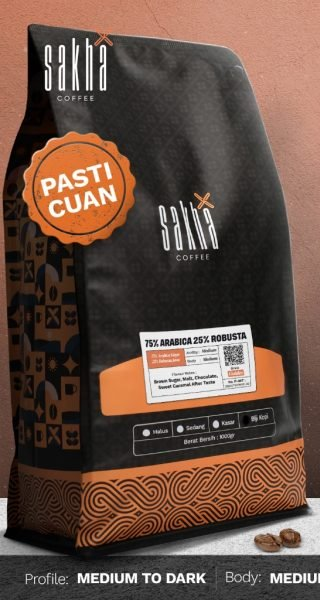

Sakha Coffee — Your Daily Coffee
Sorotan Sakha
Pilih pengalaman ngopimu
Kopi enak yang gampang diulang tiap hari.
Lihat katalogKemitraan langsung dengan petani, disangrai kecil-kecilan tiap minggu, dan tanggal sangrai tercetak di tiap kemasan.

Kategori terpopuler.
Lihat semua kategoriBundel dan potongan yang sedang jalan.
Harga di bawah adalah harga yang benar-benar berlaku sekarang, bukan harga coret yang dikarang untuk terlihat murah. Potongannya berhenti begitu bulan ini habis.

Kenapa Sakha.

Ringkasan
Kami beli langsung dari petani mitra di Gayo, Kintamani, dan Temanggung — tidak ada tengkulak yang menempel di harga kopimu. Biji disangrai sendiri tiap minggu di roastery kami.
Tanggal sangrai tercetak di tiap kemasan. Lewat tujuh hari dari sangrai, kopi itu tidak kami kirim.
Bukti
- Berdiri
- 2018
- Roastery
- Bekasi & Bali
- Kebun mitra
- Gayo · Kintamani · Temanggung
- Umur sangrai
- Maks. 7 hari
- Sertifikasi
- Halal & BPOM
- Penghargaan
- Tokopedia Paling Nyam 2023
Cerita di balik cangkirmu.

Kenapa rasa kopi berubah setelah 2 minggu?
Umur sangrai memengaruhi gas dan aroma. Begini cara membacanya.
Seduh · 5 mnt baca
Titik asal: bagaimana lot infused kami dibuat
Dari arabika Karo sampai aroma persik Sun of Peach.
Proses · 7 mnt baca
Seduh drip bag tanpa alat, tetap enak
Air 90°C dan 3 tuang pelan. Selesai dalam 4 menit.
Panduan · 4 mnt baca